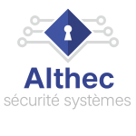
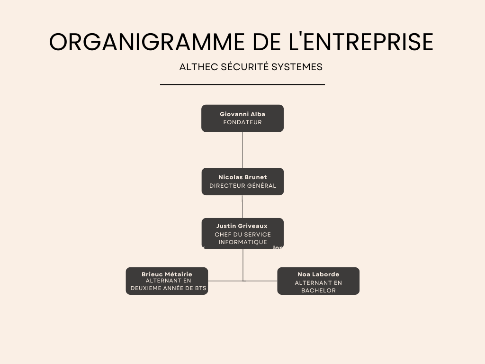
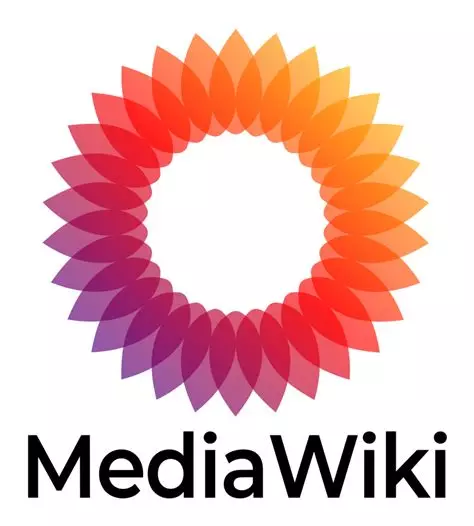
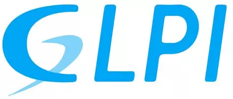
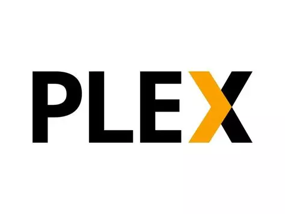
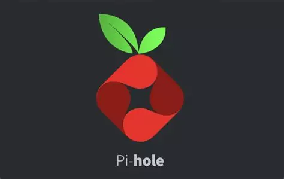
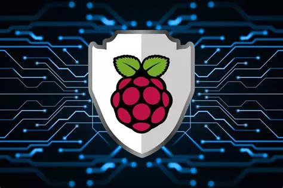
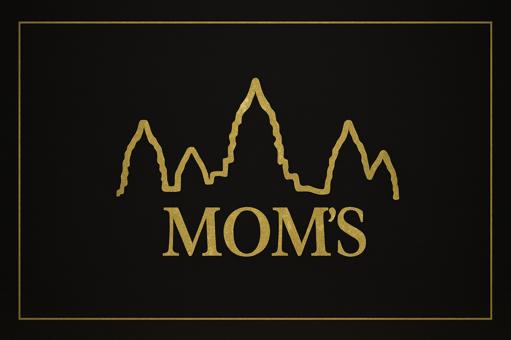

Bienvenue, je suis Brieuc Métairie
Étudiant en BTS SIO option SISR, je me forme aux métiers des systèmes et réseaux.
Ce que j’aime dans l’informatique, c’est comprendre comment une infrastructure fonctionne concrètement :
installer, configurer, sécuriser, puis garder le tout stable dans le temps.
J’accorde aussi beaucoup d’importance à la documentation : une solution claire et bien expliquée
est forcément plus simple à maintenir et à transmettre.
Le BTS SIO – option SISR
Le BTS SIO propose deux spécialisations. J’ai choisi SISR (Solutions d’Infrastructure, Systèmes et Réseaux)
car elle correspond à ce que je veux faire plus tard : travailler sur les serveurs, le réseau, la sécurité,
et l’exploitation au quotidien.
On y apprend à mettre en place des services (AD, DNS, DHCP, virtualisation…),
à les superviser, et à gérer les incidents proprement.
- Installation et configuration de postes clients (OS, pilotes, mises à jour, outils)
- Administration de serveurs et réseaux (sauvegardes, supervision, VLAN, DHCP/DNS)
- Sécurisation des accès et des systèmes (droits, chiffrement, mises à jour)
- Support utilisateur et rédaction de procédures
Administration systèmes
Gestion réseau
Virtualisation
Support
Cybersécurité
Mon école — Faculté des Métiers de l’Essonne
Je prépare mon diplôme à la FDME en alternance.
Le vrai plus, c’est le lien direct entre cours et terrain :
ce que j’apprends à l’école, je le mets rapidement en pratique en entreprise.
Ça m’aide à progresser vite et à prendre des réflexes professionnels.
Découvrir la FDME
Mon CV
Mon CV résume mes compétences techniques, mes projets principaux et ce que je sais faire en entreprise.
Je le tiens à jour au fil de mes missions.
📄 Télécharger mon CV (PDF)
Présentation de l’entreprise

ALTHEC Sécurité Systèmes est une PME spécialisée dans la sûreté électronique.
Elle accompagne ses clients de manière complète : analyse du besoin, choix de la solution,
installation sur site, puis maintenance dans la durée.
La relation client est directe, ce qui permet d’adapter rapidement les solutions.
Raison sociale : ALTHEC SECURITE SYSTEMES
Forme juridique : SARL à associé unique (capital social 80 000 €)
Date de création : 4 janvier 2006
Siège social : 4 rue Voltaire, 94290 Villeneuve-le-Roi
Secteur : alarmes intrusion, vidéosurveillance IP, contrôle d’accès, interphonie.
Zone : principalement Île-de-France.
Clientèle : commerces, PME, collectivités, copropriétés.
Chiffre d’affaires : non communiqué publiquement ; activité stable depuis 2006.
Activité principale
L’entreprise installe des solutions de protection adaptées à chaque site :
caméras IP, centrales d’alarme, badges d’accès, interphonie…
Une fois le système en place, elle assure un suivi dans le temps
grâce à la maintenance préventive et corrective.
Offre de services
- Étude & conseil : analyse des risques, choix technique, chiffrage
- Installation : câblage, pose, configuration, mise en service
- Intégration réseau : IP, accès distant sécurisé, supervision simple
- Maintenance : préventif/correctif, support utilisateur
Organigramme

Activités
Je présente ici deux types de projets : ceux réalisés dans le cadre de ma formation,
et ceux montés chez moi en autonomie pour aller plus loin ou répondre à un besoin concret.
📘 Projets scolaires

MediaWiki sous Windows
Objectif : mettre en place un wiki interne pour centraliser les procédures de support et d’exploitation.
Environnement : Windows + XAMPP.
- Installation / configuration XAMPP
- BDD
mediawiki via phpMyAdmin
- Déploiement dans
C:\xampp\htdocs\mediawiki
- Assistant + extensions (VisualEditor)
- Sauvegardes SQL + répertoire images

GLPI sous Windows
Objectif : déployer une plateforme helpdesk et gestion de parc.
Environnement : Windows + WAMP/XAMPP.
- Stack Web (Apache / PHP / MariaDB)
- BDD
glpi via phpMyAdmin
- Déploiement dans
C:\xampp\htdocs\glpi
- Configuration profils, entités, SLA
- Inventaire auto (FusionInventory)
🛠️ Projets personnels

Serveur Plex sur NAS
Objectif : centraliser une médiathèque personnelle et la diffuser à la maison.
Matériel : NAS Synology DS920+ + Docker.
- Plex Media Server via Docker
- Volumes persistants config + bibliothèques
- Organisation Films / Séries / Musiques
- Accès multi-appareils
- Transcodage matériel activé
Résultat : serveur stable et simple à utiliser.

Pi-hole sur Raspberry Pi
Objectif : bloquer publicités/trackers au niveau DNS pour tout le réseau domestique.
Environnement : Raspberry Pi + Raspberry Pi OS.
- Installation système + mises à jour
- Déploiement Pi-hole et DNS local
- DNS routeur redirigé vers Pi-hole
- Listes de blocage (ads/tracking/malware)
- Supervision via interface Web
- Sauvegarde configuration + IP fixe
Résultat : réseau plus propre et plus sécurisé.

Serveur VPN sur Raspberry Pi
Objectif : accéder à mon réseau domestique depuis l’extérieur en sécurité.
Environnement : Raspberry Pi + WireGuard/OpenVPN.
- Durcissement du Raspberry Pi
- Déploiement serveur VPN
- Profils clients (PC/mobile)
- Port-forward + DDNS sur la box
- Règles firewall pour limiter l’accès interne
- Tests externes + documentation utilisateur
Résultat : accès distant fiable et chiffré.

Site vitrine pour le restaurant d'une connaissance
Objectif : réaliser un site vitrine simple et élégant pour présenter le restaurant, l’ambiance,
les menus et les informations pratiques.
Contenu : pages essentielles (Accueil, Carte/Menu, Infos pratiques, Contact) avec un design cohérent
et une navigation fluide.
- Maquettage puis intégration HTML/CSS/JS
- Responsive complet (mobile → desktop)
- Optimisation des images et du chargement
- Formulaire de contact et liens réseaux sociaux
Aucun projet ne correspond à ta recherche.
Veille informationnelle
Je réalise une veille régulière sur les systèmes, le réseau et la cybersécurité.
L’objectif est de rester à jour sur les nouveautés techniques et sur les vulnérabilités importantes,
pour comprendre l’impact réel en entreprise.

Analyse des évolutions serveur et de leur impact sur l’exploitation.

Débats sur l'impact écoonomique de l'application de la RGPD par les entreprises

Intéressant lorsque l'on s'intéresse à l'IA